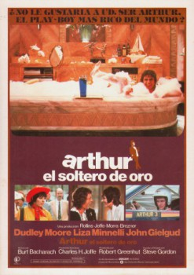

Arthur (1981)


The most fun money can buy.

País:Estados Unidos, 97 minutos.
Idiomas:Inglés, Italiano
GénerosComedia, Drama, Romántica
Director/es:Steve Gordon
Guionistas:Steve Gordon
Códec de vídeo:Unknown
Número: 3530
TomatoMeter:

--

--
Clasificación IMDb:


6.9/10 (436 votos)
Certificación:
Argumento:
Arthur is a 30-year-old child who will inherit $750 million if he complies with his family's demands and marries the woman of their choosing.
Reparto
Dudley Moore (Como Arthur Bach), Liza Minnelli (Como Linda Marolla), John Gielgud (Como Hobson), Geraldine Fitzgerald (Como Martha Bach), Jill Eikenberry (Como Susan Johnson)
Medio: Archivo de video,
Localización: D:\PELICULAS\COMEDIA\Arthur [1981]\Arthur [1981].mp4
Prestado: No
Rel. aspecto: Unknown